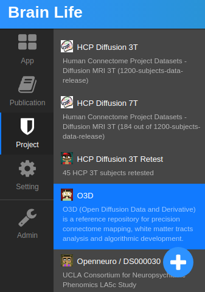
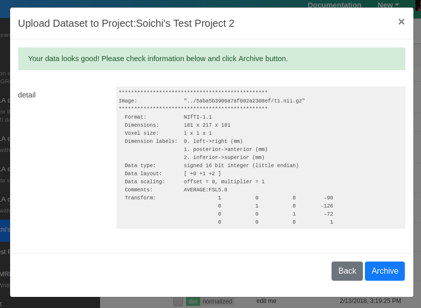
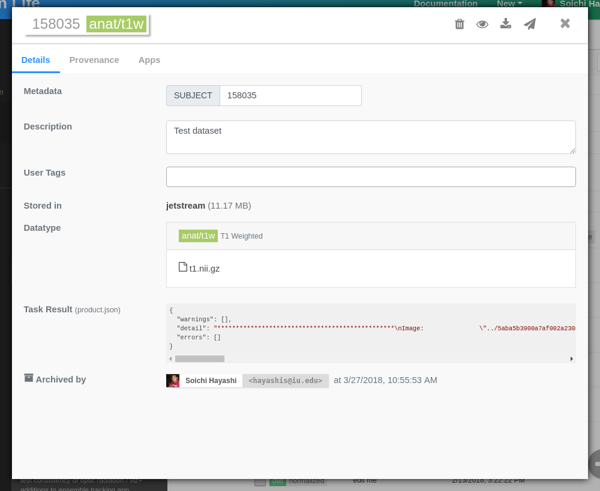
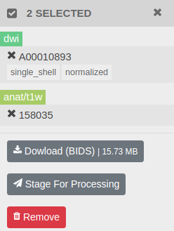
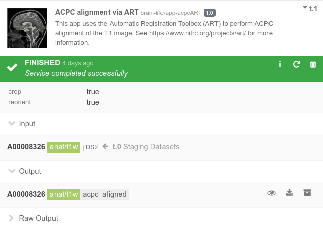
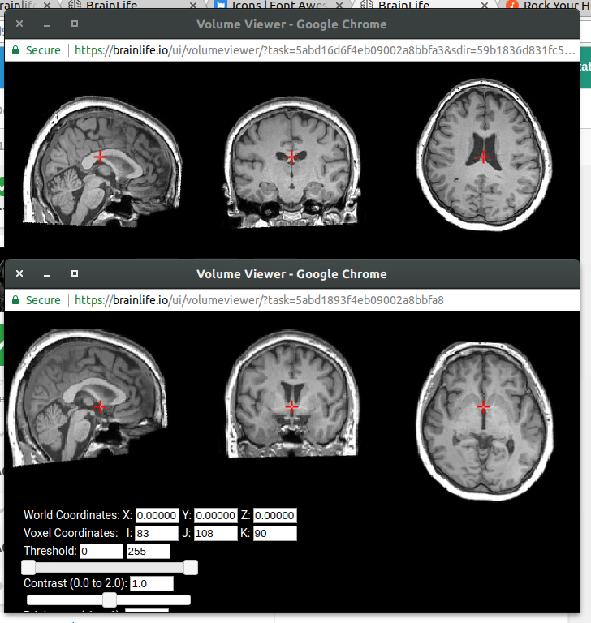

Tutorial¶
This tutorial will guide you through the following functionalities of Brainlife.
- Signing up
- Creating new projects and uploading datasets
- Launching visualizers to visualize your data
- Running processes on datasets and archiving results.
For a more high-level overview of Brainlife, see About Page.
Sign Up¶
If you have not registered on Brainlife.io yet, please do so by visiting The Authentication Page and clicking on a preferred 3rd party authentication method: Google, ORCID, Github, or through your institution.
Warning
If you register through the 3rd party authenticator, please use the same authenticator each time you login, or you will end up creating multiple Brainlife accounts.
If you'd like to setup a dedicated username/password for Brainlife, please click the "Sign Up" link. You will be asked to confirm your email address once you register.
Note
You can associate multiple authenticators to your account once you register by going to Settings / Account, Connected Accounts, and click "Connect" next to various 3rd party authenticators.
Create Project¶
Once you login, you should land on Brainlife Apps page.
Before we can start using Brainlife, we need to create a new project.
Click on Project button on the left hand side menu, then click a plus side button at the bottom of the project list.

Note
Project is where you can organize your datasets, do data processing, and share datasets with your project members. For more information about project, please read project page
Enter any name and description, and leave everything else default. Click Submit.
Congratulations! You just created your first private project!
Upload Dataset¶
Now, let's upload some test datasets. Open the Datasets tab.
Note
In Brainlife, datasets are sets of files/directories for specific modality or data derivatives for a specific subject. All data processing is done at the subject level. Datasets are immutable; you can only modify the metadata, but not the data files once you create them.
Brainlife has 2 kinds of data storage.
-
Datasets Archive
The datasets tab you are seeing now shows the current content of your dataset archive. Datasets under this tab are stored in our object storage permanently (and some are backed up to our tape archives also).
-
Process Scratch Space
You cannot directly use archived datasets to run Apps. To run Apps, datasets will be automatically staged out of your archive and transferred to Brainlife's scratch space and on various compute resources where Apps are executed.
Datasets on process scratch space will be automatically removed within 25 days or sooner. If you have any output datasets that you'd like to keep permanently, you will need to archive them back to the Datasets Archive.
Now, click plus button at the bottom of the screen to open the dataset upload dialog.

Select Datatype that you'd like to upload (currently limited to t1/t2 and dwi) and upload your dataset.
Note
If you don't have any data to upload, you can skip this step and you can use pre-uploaded datasets from various public projects.
Upload form will run the server side validation/data normalization service. You can check the results from this step. If everything looks good, click Archive.

Once uploaded, you should see a new dialog showing details about your new datasets. All archived datasets are immutable (read-only), but you can make changes to the metadata if necessary (description, tags, etc..).

Note
Stored in field shows where your dataset is archived. For a large dataset, it might take a while for it to be archived. Please give it a few minutes.
Visualize Dataset¶
Any datasets stored in Brainlife can be visualized using Web-based and Native (via Web-VNC) visualization Apps registered for specific datatypes. To launch a visualizer, click on the visualizer icon () at the top of dataset dialog.
For example, neuro/anat/t1 datasets can be visualized by the following set of Visualization Apps.

Note
Similar to Apps, developers can develop and contribute new visualization Apps to run on Brainlife. If you are developing visualization Apps, or have Apps that you'd like us to add, please contact us at brlife@iu.edu.
Click any of the visualization Apps that you'd like to launch to visualize your data.
Downloading BIDS¶
You can search/select and bulk download datasets. On the dataset table, select the datasets you'd like to download by clicking on the check box, then click Download (BIDS) button.

Brainlife will stage selected datasets, organize them into a BIDS structure, and let you download the whole structure as a single tar ball. Once it's ready, click Download.
Note
At the moment, all Brainlife datasets will simply be stored under /derivatives directory regardless of the datatype.
Apps¶
Before we proceed to Process tab, let's take a quick detour and visit the Apps page.

The Apps page shows all Brainlife Apps that are publicly available that you can execute on resources and datasets that you have access to. Please take a look and see what type of Apps are currently available. You can click on each tile to see more details.
On Brainlife, Apps are normally small programs that perform a specific data processing. Although we have a few Apps that behave more like a typical pipeline or workflow (including pre/post processing, data analysis, reporting, etc..), most Brainlife Apps should only do one thing, and one thing well. Please see about for more details.
Datatypes¶
Brainlife Apps exchange data through datatypes. Developers involved with interoperating input/output datasets should discuss and agree on the set of files/directory structure and their semantics, and register a new datatype by submitting an issue on datatypes github repo.

Various colored boxes show the input and output datatypes. For example, the above image shows that this app will take dwi input dataset, and generate another dwi dataset with a datatype tag of "masked", and also output another dataset of a datatype mask.
For more information on datatype, please visit datatypes page
Data Processing¶
Now that we know what Apps are, let's go back to your private project, then open Processes tab. You should see an empty page as you don't have any processes yet. On Brainlife, Process is where you can submit a group of tasks/Apps that can share input/output datasets.
Let's create a new process by clicking the plus button at the right bottom corner of the page. Enter any name you'd like for your process. You should see a screen that looks like this now.

To process data, you first need to stage any dataset from our archive to your process. Each process can only process data that is either staged or generated by other Apps. Click Stage New Dataset button. On the Select Datasets dialog, let's select NKI (Rockland Sample) project, and select any anat/t1w dataset.

Click OK to stage. You should see a box showing "Staging Datasets" with selected datasets. While it's staging your data, let's submit our first App. Click Submit New App button. A dialog should show up with a list of Apps that you can submit using your anat/t1w dataset. Brainlife allows you to select only the Apps where you have all required input datasets.
Let's run ACPC alignment with ART App on your data. ACPC alignment is a common alignment tool used to re-orient/re-position the Brain image in common orientation suited for further image analysis.
Find and click the App, then make sure that Brainlife has automatically selected your staged data as input. Leave other options default. Click Submit. Brainlife should now find the most appropriate resource to run this App, and transfer data to the resource and submit it to the local batch scheduler.
Once started, a task should take a few minutes to run. Once completed, you should see a screen that looks like this.

You can browse/download any output files as they are generated under Raw Output section. Once completed successfully, you can launch various visualization tools by clicking the button next to the Output section. Open Volume Viewer on both the original input data and the ACPC alignment output data and see how this algorithm has re-oriented your data.
Below is the before/after view. Can you see that bottom one is better aligned/re-positioned at ACPC line? For more info on ACPC alignment see here

Now that you have finished running ACPC alignment, you will be able to submit a few new Apps under Submit New App dialog that you couldn't submit before. Please feel free to submit other Apps or stage more datasets.
Hint
If you are not sure which datasets to stage, please see Apps page and find which datatype each App requires to run.
Archiving¶
So far, you have staged datasets, submitted an App that generated data derivatives, and visualized them.
Now, it's important to note that all processes are meant to be temporary and Brainlife will remove processes within 25 days of data generation. If you'd like to permanently keep the output datasets you just generated, you will need to archive them by clicking on button next to the Output section. You can edit any metadata and description, and click the Archive button to archive it.
After you archive your data, open the Datasets tab and make sure that your dataset is listed there. You can click on the dataset record to see more details.
Datasets¶
As you submit more Apps and generate datasets from them, it becomes harder to keep up with how a given dataset was generated. Brainlife keeps track of a record of how a given dataset was generated all the way from the original input dataset (called data provenance).
Under Datasets tab, select any dataset you have generated and look under Provenance tab.

The green boxes are the input datasets (uploaded to Brainlife from outside) and the white boxes are the Apps run to generate the data derivatives. You can pan/zoom the diagram, or re-layout some items by dragging/dropping.
What's Next¶
You should now be familiar with basic functionalities of Brainlife. Please take a look at other pages for more information. For example, if you'd like to write your app and register on Brainlife, please take a look at App Developer Guide. If you'd like to learn how to bulk process multiple subjects, please take a look at Pipeline.
Please let us know how we can improve this tutorial, or send us pull requests with your edits.